553 lb of food + $910.90 raised in a single Thanksgiving drive.
Community work run through his Loblaw Asset Protection role, with OPP Auxiliary and local partners — organized like paid work, and measured like it too.
Zehrs Thanksgiving Food Drive — Oct 2026
Alliston Food Bank · with OPP Auxiliary
Co-hosted with the Loblaw Asset Protection team. 553 lb of food and $910.90 raised for the Alliston Food Bank.
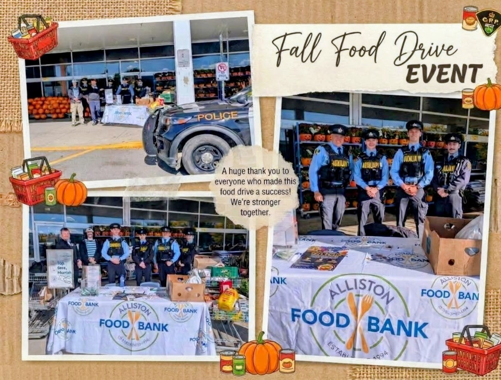
Fall Food Drive collage — OPP SUV, Alliston Food Bank table, and thank-you text. Oct 3, 2026.
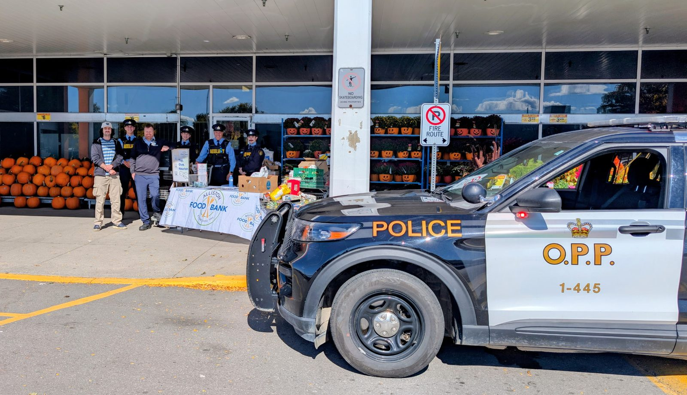
Volunteers and OPP Auxiliary behind the donation table outside Zehrs, OPP SUV in front. Oct 3, 2026.
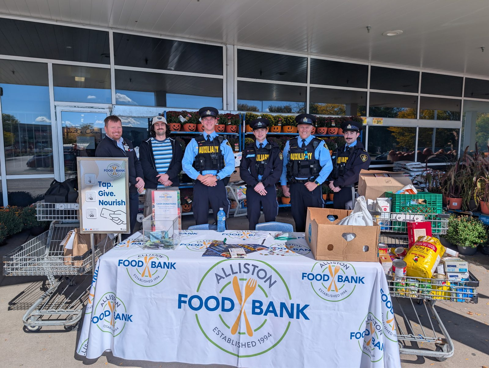
Donation table with the Alliston Food Bank banner, “Tap Give Nourish” sign, and food donations. Oct 3, 2026.
Zehrs Back to School Food Drive — Aug–Sep 2026
With Derek Coburn, OPP Auxiliary, and Landmark bus lines
Run with the Loblaw Asset Protection team. $1,600+ raised.
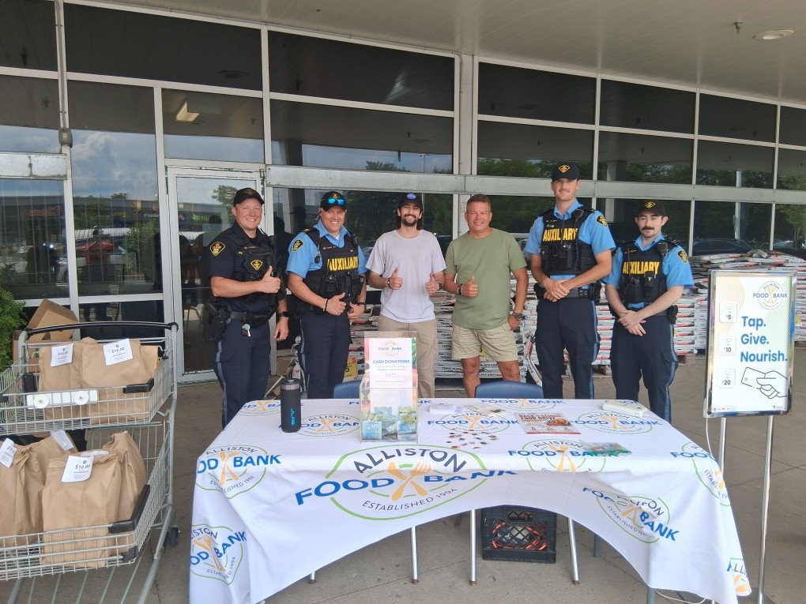
Six people behind the Alliston Food Bank table outside Zehrs — OPP and volunteers, with carts of paper bags. Aug 22, 2026.
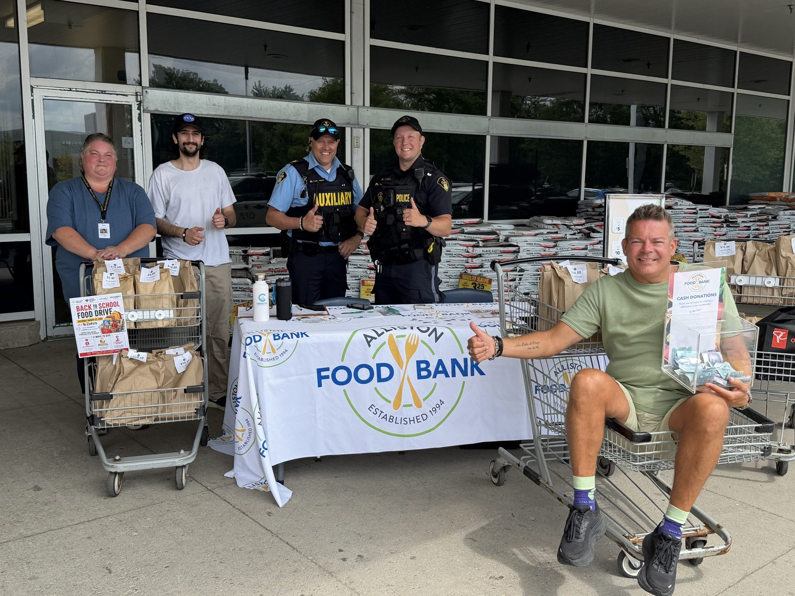
Volunteers and OPP members behind the Food Bank table, with a man in a shopping cart holding a box. Aug 22, 2026.
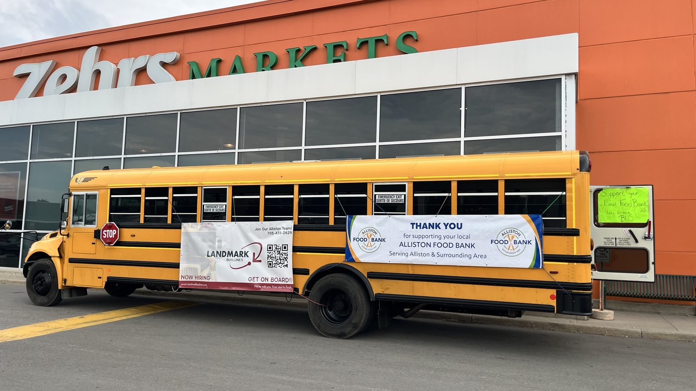
Yellow school bus with a “Thank You Alliston Food Bank” banner in front of Zehrs. Aug 22, 2026.
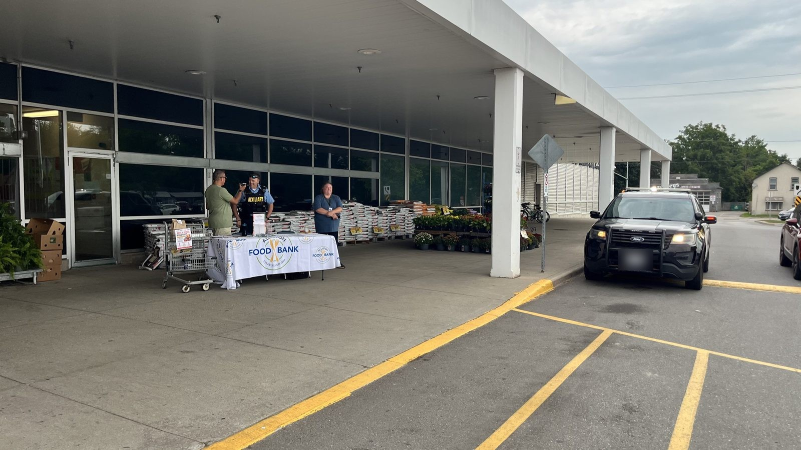
Zehrs storefront with the donation table and a black police SUV approaching. Aug 22, 2026.
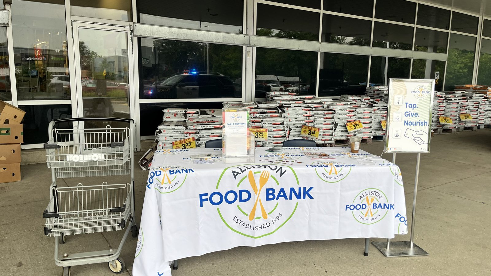
Alliston Food Bank table set up outside Zehrs, with a shopping cart alongside. Aug 22, 2026.
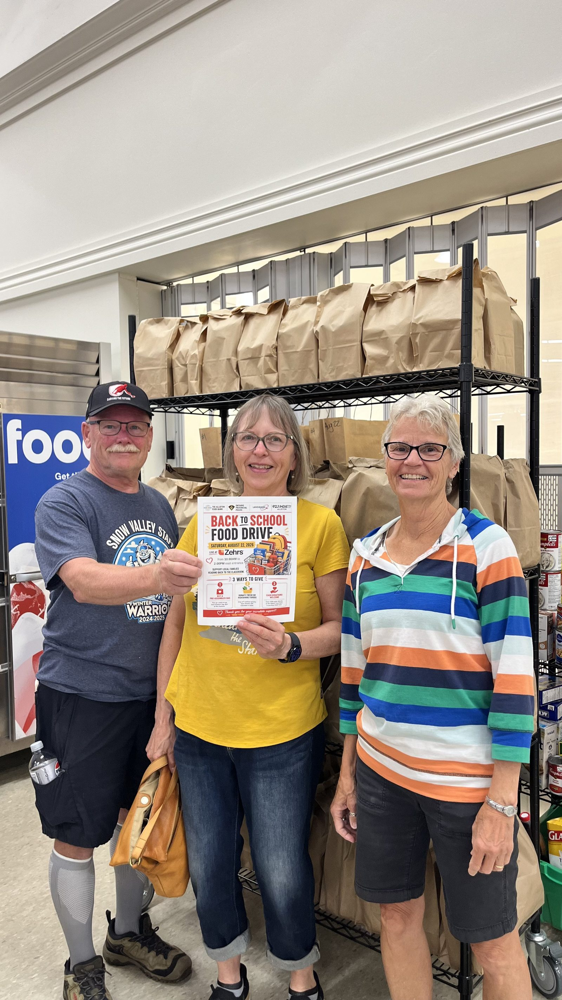
Three volunteers holding the “Back to School Food Drive” poster inside Zehrs. Aug 21, 2026.
Toronto Police Golf Tournament — Jun 2026
Angus Golf Club, Markham · in support of Victim Services
Took part in the Toronto Police golf tournament, in support of Victim Services.
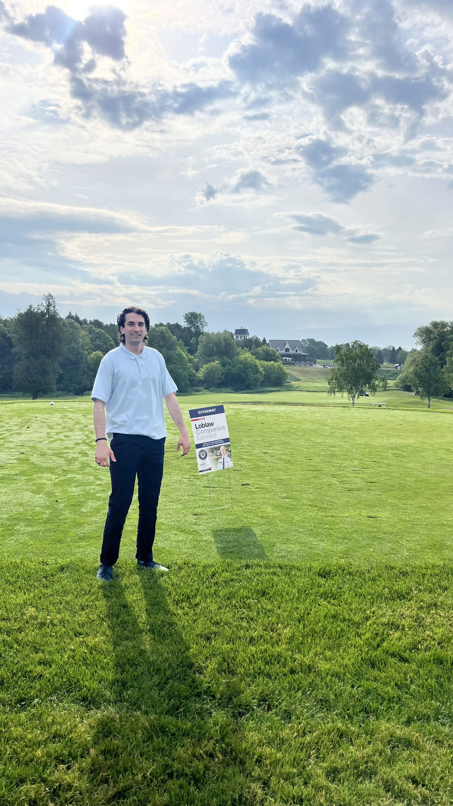
On the fairway in a light blue polo, holding a paper. Jun 11, 2026.
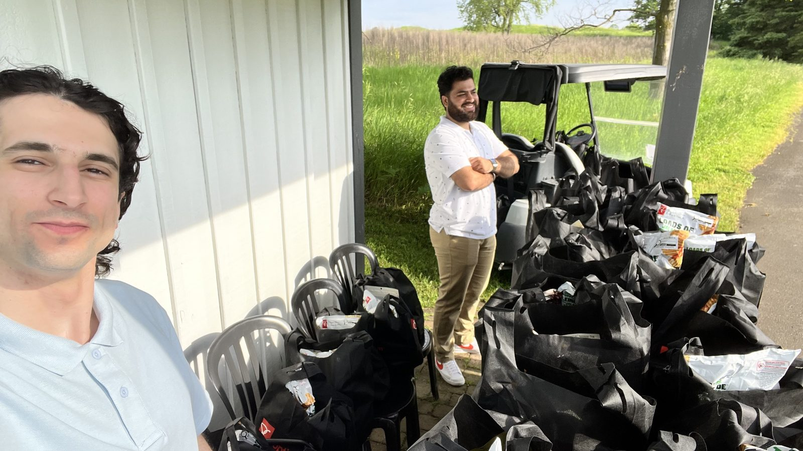
Beside a golf cart and black golf gift bags, with a colleague in the foreground. Jun 11, 2026.
Zehrs Easter Food Drive — Mar 2026
Zehrs
$642.95 raised.
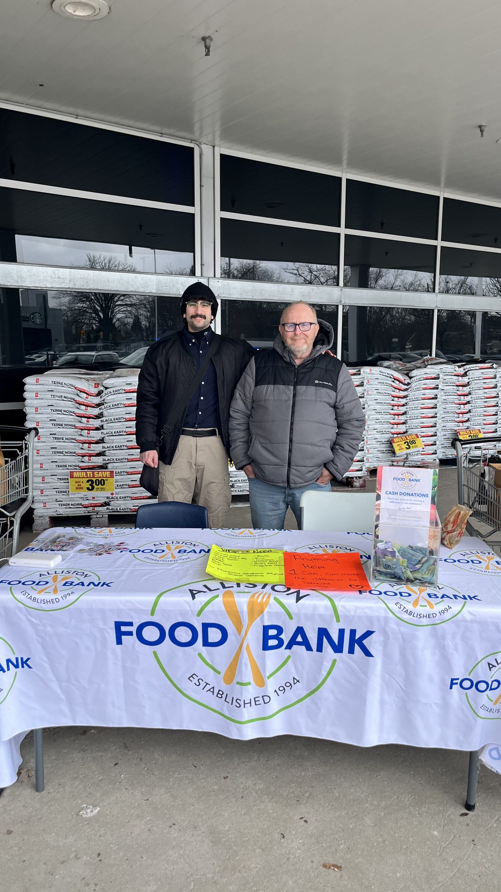
Behind an Alliston Food Bank table at the Zehrs entrance, with a colleague. Mar 28, 2026.
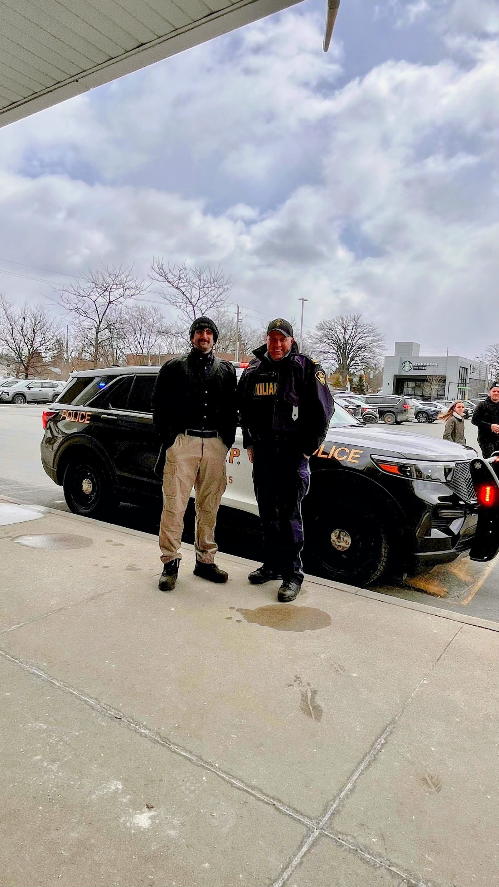
With a uniformed OPP officer beside a black-and-white OPP SUV in the Zehrs car park. Mar 28, 2026.
Photos from the field
From Mohammed Mounir’s LinkedIn profile and Google Photos
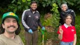
Blue Chip CARE tree planting, Sid Manser Park — Sep 2026.
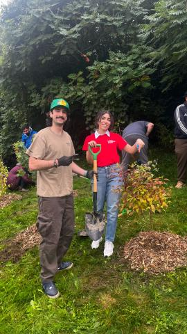
Tree’s planted! — Sid Manser Park, Sep 2026.
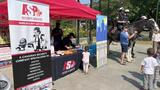
ASP crosswalk-safety booth, Toronto Police 14 Division Open House, 2024.
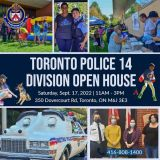
14 Division Open House collage — Sat, Sept. 17, 2022, 350 Dovercourt Rd.Mass-casualty simulation in Etobicoke (Metrolinx volunteering).
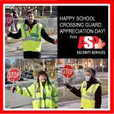
School Crossing Guard Appreciation Day graphic (ASP post).
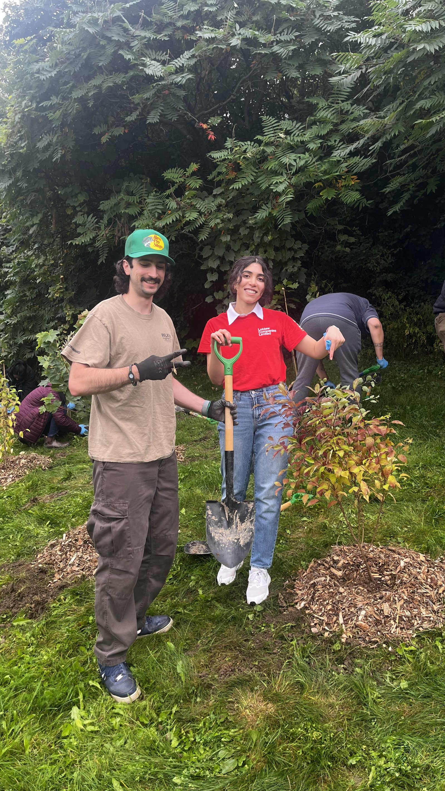
Volunteer pointing beside a newly planted shrub — Sid Manser Park, Sep 15, 2026.
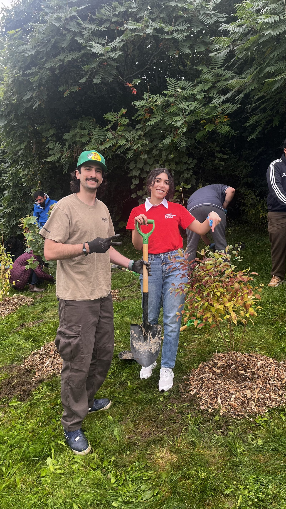
Volunteers with shovels beside a newly planted shrub — Sid Manser Park, Sep 15, 2026.
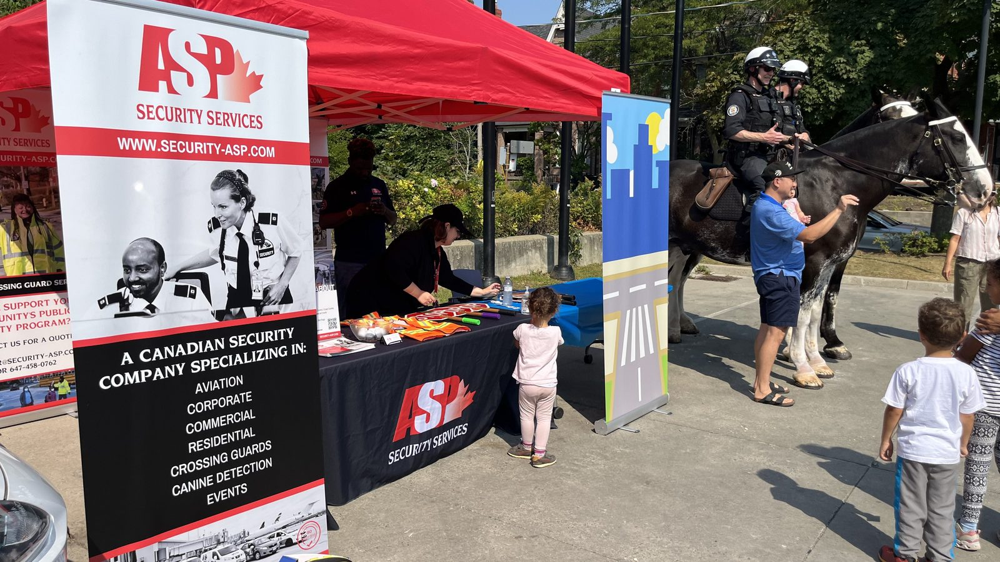
ASP booth under a red tent — mounted Toronto Police officers on horseback beside it, 14 Division Open House, Sep 14, 2024.
Photos from Mohammed Mounir’s LinkedIn profile (shown as thumbnails) and his Google Photos library (full-size originals). The Lifesaver Award photos are still thumbnails — no full-size originals were found in Google Photos.